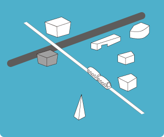

Cumpus 2011 University of Tsukuba - 筑波大学の「分かりやすさ」
リンツに拠を構える芸術大学である「kunst unversitat linz」では、全世界からひとつのキャンパスをフューチャーした「Ars Erectonica Campus」が毎年行われています。今回のフェスティバルで出展キャンパスに選ばれた「筑波大学」は、「アルスエレクトロニカ」と親交が深く、工学科と芸術科の研究室と学生が中心となった展示を行っていました。構内の1階から3階に余すところなく展示された作品と、エリアごとに区別されたコンセプト(技術、芸術、コミュニケーション)も相まって、とても居心地のよい空間でした。その会場全体の展示を廻って感じたことは、特に「分かりやすさ」を大事にしている作品が多い、という事でした。技術的には比較的古くから研究されている分野であっても、その見せ方によってユーザの作品に対する接し方はいくらでも変化します。本出展の作品は、その見せ方が非常にユーザと近しく、会場を訪れた人々は年齢や国籍を問わず、とても興味深そうに、かつ楽しげに作品と触れ合っていました。芸術および技術と親しみやすさが調和した「分かりやすさ」は、制作者の誰もが意識するべきポイントの1つでしょう。

COLOLO
 ふたつのボールのうち片方を手で揺らしたり回したりすると、もう片方のボールが同じ動きを再現する「1bitコミュニケーションデバイス」。ユーザが行えるアクションはこれだけで、最小限の動作でユーザ間の明確な双方向コミュニケーションを実現していました。
ふたつのボールのうち片方を手で揺らしたり回したりすると、もう片方のボールが同じ動きを再現する「1bitコミュニケーションデバイス」。ユーザが行えるアクションはこれだけで、最小限の動作でユーザ間の明確な双方向コミュニケーションを実現していました。
インプットとフィードバックが同期する触覚インターフェースデバイスとしては、例として石田裕氏の「inTouch」がある。「inTouch」はデバイス上の3本の棒を手のひらで転がす行為を同期させており、物理的な触覚を共有するというコンセプトは共通。一方、「COLOLO」はその志向性を更にポップで親しみやすいデザインで実現しています。手触りが良い繊維で本体を覆った玩具のような風貌に、赤と青の光が走るギミックにはSF感も感じました。一家に一セット欲しいと思わせる、秀逸な作品でした。

Otamatone
 筑波大学出身の現代アートユニット「明和電機」の開発した電子楽器の玩具。オタマジャクシをモチーフにした簡易シンセサイザーで、誰でも手軽に演奏が楽しめる。
筑波大学出身の現代アートユニット「明和電機」の開発した電子楽器の玩具。オタマジャクシをモチーフにした簡易シンセサイザーで、誰でも手軽に演奏が楽しめる。
Secret
 洗面所を模したステージに栓が多数配置され、それを引き抜くと栓の底から囁き声が聞こえてくる。女子の密会場であるトイレの雰囲気を表現した作品。
洗面所を模したステージに栓が多数配置され、それを引き抜くと栓の底から囁き声が聞こえてくる。女子の密会場であるトイレの雰囲気を表現した作品。
Feel Through
 対象物にトグル付きレーザーガンを照射すると、凸凹に応じてトグルに抵抗がかかり、その抵抗力によって対象物との距離感を視覚でなく体感で捉えることができる。
対象物にトグル付きレーザーガンを照射すると、凸凹に応じてトグルに抵抗がかかり、その抵抗力によって対象物との距離感を視覚でなく体感で捉えることができる。
Daruman
 だるま落としをモチーフにした作品。ハンマーでボディのパーツを叩くと、だるまの表情が喜怒哀楽豊かに変化する。感情のある玩具に親しみを覚えてしまう作品。
だるま落としをモチーフにした作品。ハンマーでボディのパーツを叩くと、だるまの表情が喜怒哀楽豊かに変化する。感情のある玩具に親しみを覚えてしまう作品。
Tsukuba Scope
 スコープを覗くと、標識が道路を走り車が止まったモノクロの世界を見ることができる。静と動の本来の姿を置き換えることで、奇妙な体感を得ることができる。
スコープを覗くと、標識が道路を走り車が止まったモノクロの世界を見ることができる。静と動の本来の姿を置き換えることで、奇妙な体感を得ることができる。